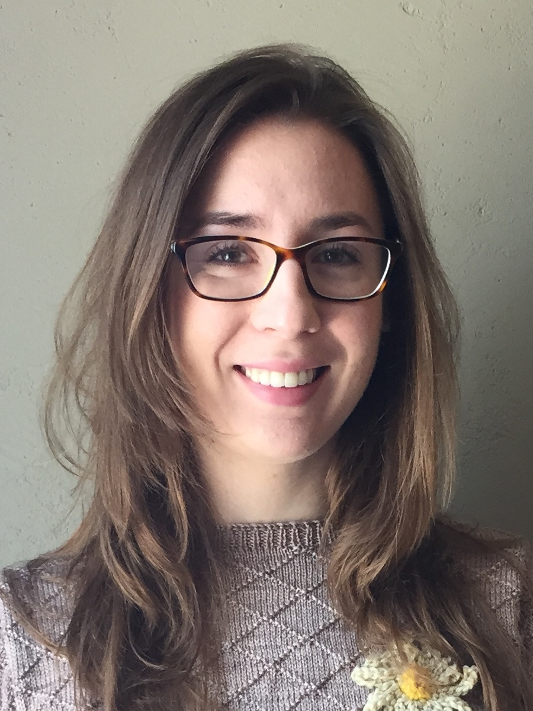

 If you need help with both right- and left-brained subjects, look no further!
Carly double majored in Physics and Astrophysics at UC Berkeley and graduated at the top of her class, giving the commencement speech at graduation. Next, she worked in astronomy research and optical test engineering (she designed software to analyze the distortion of spaceborne telescopes). After a few years she decided to go back to school--this time for a BFA in Fine Art from ArtCenter College of Design in Pasadena, where she graduated as valedictorian in December 2017 (and gave another commencement speech)!
Having grown up in Los Angeles, she is looking forward to helping students in the area reach their goals in getting into colleges and succeeding in classes!